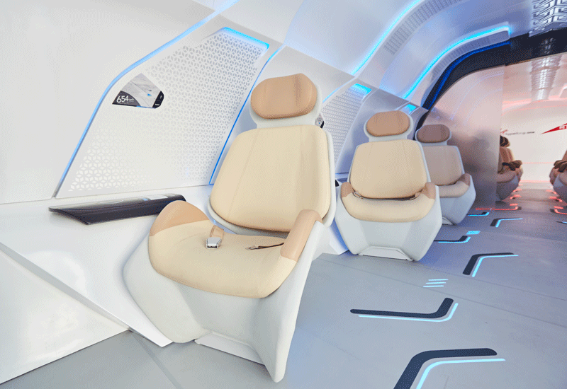

Hyperloop Corridors and Pod Design 🚄
Hyperloop imagines high-speed pods moving through low-pressure tubes between cities. Design challenges include passenger safety, emergency egress, and energy optimization.
- Route selection and right-of-way
- Pod aerodynamics and comfort
- Station planning and throughput

Pod and Station Concepts


Goal: Reduce dwell times while maintaining safety, accessibility, and premium experience.